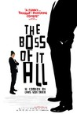
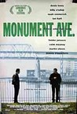
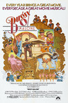
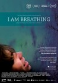
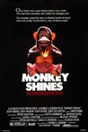
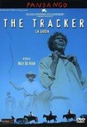
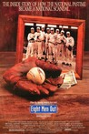
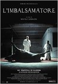

Movie Releases By Score

|
2901.
Paradise Now
Release Date:
October 28, 2005

Paradise Now is the story of two young Palestinian men as they embark upon what may be the last 48 hours of their lives. (Warner Independent Pictures)
|

|
2902.
Cry, the Beloved Country
Release Date:
December 15, 1995
In a land torn by hatred and injustice, two fathers -- one a man of peace, the other a man of power and privilege -- whose lives seem destined for a violent collision. But instead, in the wake of a tragic killing, these extraordinary men form an unlikely union and together find the kind of understanding that could heal a nation. (BV Entertainment)
|

|
2903.
What Doesn't Kill You
Release Date:
December 12, 2008

Brian and Paulie are friends who grew up like brothers on the gritty streets of south Boston. They do whatever it takes to survive, living by the code of their dog-eat-dog neighborhood. Petty crimes and misdemeanors grow into more serious offenses and eventually, they fall under sway to organized crime boss Pat Kelly. As Brian becomes increasingly lost in a haze of drugs and ‘jobs,’ even the love he has for his wife and his children does not seem like it will be enough to redeem him. Meanwhile, Paulie plans “one last heist” but knows it will take both of them to pull it off. How can they escape the only life they know? (Yari Film Group)
|

|
2904.
Manito
Release Date:
June 13, 2003
Set, and vibrantly photographed, in the Washington Heights section of Manhattan, Manito is the fictional story of two days in the life of two Latino brothers, Junior and Manny. Employing techniques of cinema verite, the film vibrantly captures a neighborhoodand the people who live there. (Film Movement)
|

|
2905.
Secret Lives: Hidden Children and Their Rescuers During WWII
Release Date:
May 16, 2003
This documentary depicts the stories of a small number of Jewish children who were saved from the Nazis by non-Jews who hid these children in their homes despite great personal danger.
|

|
2906.
Marion Bridge
Release Date:
April 11, 2003
This film speaks volumes about sibling and parental relationships with a beautifully realized tale of loss, healing and humor. (Film Movement)
|

|
2907.
Swimming
Release Date:
July 26, 2002
An intimate look at friendship, love and breaking away, set amidst the backdrop of a bustling beach town. (Oceanside Pictures)
|

|
2908.
Chasing Amy
Release Date:
April 4, 1997
Lifelong best friends Holden (Affleck) and Banky (Lee) are enjoying success as the creators of the cult hit comic book "Bluntman and Chronic." When they meet fellow comic book artist Alyssa (Adams), Holden's desire for the beautiful charmer is immediate. Alyssa, however, has set her romantic sights elsewhere. (Miramax Films)
|

|
2909.
Tyrel
Release Date:
December 5, 2018
Tyler (Jason Mitchell) joins his friend on a trip to the Catskills for a weekend birthday party with several people he doesn’t know. As soon as they get there, it’s clear that (1) he’s the only black guy, and (2) it’s going to be a weekend of heavy drinking. Although Tyler is welcomed, he can’t help but feel uneasy in “Whitesville.” The combination of all the testosterone and alcohol starts to get out of hand, and Tyler’s precarious situation starts to feel like a nightmare.
|

|
2910.
F/X
Release Date:
February 7, 1986
A movie special effects man is hired to fake a real-life mob killing for a witness protection plan, but finds his own life in danger.
|

|
2911.
Land of the Dead
Release Date:
June 24, 2005
George A. Romero's long-awaited return to the genre he invented. (Universal)
|

|
2912.
Searching for Ingmar Bergman
Release Date:
November 2, 2018
On the 100th anniversary of his birth, internationally renowned director Margarethe von Trotta examines Ingmar Bergman’s life and work with a circle of his closest collaborators as well as a new generation of filmmakers. This documentary presents key components of his legacy, as it retraces themes that recurred in his life and art and takes us to the places that were central to Bergman’s creative achievements.
|

|
2913.
Inspector Bellamy
Release Date:
October 29, 2010
Two of the giants of French cinema, Claude Chabrol and Gerard Depardieu, team up for the only time for the director's 50th and final feature film, a wry thriller about a police commissioner trying to balance professional instinct with family duty. Once again, Paul Bellamy and his wife are spending their vacation at her family home in a quiet town. But just as they're settling into their reassuringly predictable holiday routine, his perennially troubled younger brother shows up, joined by a mysterious stranger seeking Bellamy's protection. (IFC Films)
|
|  |
2914.
The Boss of It All
Release Date:
May 23, 2007
In this comedy, the owner of an IT firm wants to sell up. There is just one problem: back when he started the firm he invented a fictitious boss to hide behind when there were unpopular decisions to make. The would-be buyers insist on negotiating with the boss in the flesh and so the owner resorts to employing a down-at-heel actor to play the part. Suddenly, the actor discovers that he is a pawn in a game that sorely tests his (lack of) moral force. (IFC First Take)
|

|
2915.
Bleak Moments
Release Date:
January 1, 1971
Moments from the uncompromisingly bleak existence of a secretary, her intellectually disabled sister, aloof and uneasy teacher boyfriend, bizarre neighbor and irritating workmate.
|

|
2916.
A Family Thing
Release Date:
March 29, 1996
Robert Duvall and James Earl Jones portray long-lost brothers in this compelling and poignant family drama about a white Southerner whose identity is shaken after he learns that his natural mother was black. (MGM)
|

|
2917.
Thirst Street
Release Date:
September 20, 2017
Alone and depressed after the suicide of her lover, American flight attendant Gina (Lindsay Burdge) travels to Paris and hooks up with nightclub bartender Jerome (Damien Bonnard) on her layover. But as Gina falls deeper into lust and opts to stay in France, this harmless rendezvous quickly turns into unrequited amour fou. When Jerome’s ex Clémence (Esther Garrel) reenters the picture, Gina is sent on a downward spiral of miscommunication, masochism, and madness. [Samuel Goldwyn Films]
|

|
2918.
Being Elmo: A Puppeteer's Journey
Release Date:
October 21, 2011
Beloved by children of all ages around the world, Elmo is an international icon. Few people know his creator, Kevin Clash, who dreamed of working with his idol, master puppeteer Jim Henson. Displaying his creativity and talent at a young age, Kevin ultimately found a home on Sesame Street. Narrated by Whoopi Goldberg, this documentary includes rare archival footage, interviews with Frank Oz, Rosie O’Donnell, Cheryl Henson, Joan Ganz Cooney and others and offers a behind-the-scenes look at Sesame Street and the Jim Henson Workshop. (Submarine Entertainment)
|
|  |
2919.
Monument Ave.
Release Date:
September 25, 1998
Set in a tough Irish-American neighborhood, this is a story about the power of loyalty, community, and friendship in the world of organized crime.
|

|
2920.
Smiley Face
Release Date:
November 16, 2007
Jane F., an unsuccessful slacker actress, is having a bad day. And it’s getting more outrageous and comically surreal by the minute. Jane’s misadventures begin when she treats herself to a batch of cupcakes left unattended by her psycho roommate that prove to be not as innocent as they appear. Soon, she is trying to cross town so she can repay an unforgiving drug dealer, attend an audition, and somehow replace the precious cupcakes. Bumming a ride from her roommate’s friend--who is totally infatuated with her--she sets out on a long, strange trip. And when the original manuscript of the Communist Manifesto falls into her hands, things really get out of control. (First Look International)
|

|
2921.
London Road
Release Date:
September 9, 2016
London Road documents true events that occurred in 2006, when the town of Ipswich was shattered by the discovery of the bodies of five women. The residents of London Road had struggled for years with frequent soliciting and curb-crawling on their street. When a local resident was charged, and then convicted, of the murders, the community grappled with what it meant to be at the epicenter of this tragedy. Using their own words set to an innovative musical score, London Road tells a moving story of ordinary people coming together during the darkest of experiences.
|
2922.
Wal-Mart: The High Cost of Low Price
Release Date:
November 4, 2005
Robert Greenwald's documentary WAL-MART: The High Cost of Low Price takes you behind the glitz and into the real lives of workers and their families, business owners and their communities, in an extraordinary journey that will challenge the way you think, feel... and shop. (Brave New Films)
|
|

|
2923.
Leap Year
Release Date:
June 24, 2011
Laura lives deep in the melancholy of her troubled past in Oaxaca. Her solitary days pass until she decides to end it all. Laura meets Arturo who that will help her finish off the pain of her existence.
|
|  |
2924.
Bugsy Malone
Release Date:
September 15, 1976

A gangster movie in which all the gangsters are played by children. Instead of real bullets they use "splurge guns" that cover the victim in cream. The story tells of the rise of "Bugsy Malone" and the battle for power between "Fat Sam" and "Dandy Dan".
|

|
2925.
Married to the Mob
Release Date:
August 19, 1988
After her husband is killed, Angela sees a way out of the Mafia. However, her husband's boss has other ideas - he wants her for himself. Undercover FBI agent Mike Downey finds himself falling in love with her too.
|

|
2926.
The Water Horse
Release Date:
December 25, 2007

The story begins when Angus, a young Scottish boy, finds an enchanted egg. Taking it home, he soon finds himself face-to-face with an amazing creature: the mythical "water horse" of Scottish lore. Angus begins a journey of discovery, facing his greatest fears and risking his life to protect a secret that would give birth to a legend. (Columbia Pictures)
|

|
2927.
A Monster with a Thousand Heads
Release Date:
May 11, 2016
When Sonia receives the news that her husband’s cancer has progressed to a terminal stage, she races to secure the insurance company approval for the care that can help him. Met with indifference and negligence at every turn, Sonia’s desperation triggers a primal survival instinct as a series of increasingly violent confrontations unfold. [Music Box Films]
|

|
2928.
Sisters in Law
Release Date:
April 12, 2006
Totally fascinating and often hilarious, this crowd-pleasing film follows tough-minded state prosecutor Vera Ngassa and court president Beatrice Ntuba as they help women in their Cameroon village fight difficult cases of abuse. With fierce compassion, they dispense wisdom and wisecracks in fair measure. (Women Make Movies)
|

|
2929.
Maria by Callas
Release Date:
November 2, 2018
Told through performances, TV interviews, home movies, family photographs, private letters and unpublished memoirs—nearly all of which have never been shown to the public—the film reveals the essence of an extraordinary woman who rose from humble beginnings in New York City to become a glamorous international superstar and one of the greatest artists of all time. [Sony Pictures Classics]
|

|
2930.
The Raid 2
Release Date:
March 28, 2014
Following immediately after the events of The Raid, Ram (Iko Uwais) is forced to reinvent himself as an undercover cop in order to provide protection for his wife and child. Working for the anti-corruption taskforce led by the one person he can trust, Bunawar, he is given a mission to engage himself as an enforcer for a local mob boss, Bangun. Finding a way in through Bangun's son Uco, Rama must hunt for information linking Bangun with police force corruption. All the while, he harbors a dangerous and personal vendetta for revenge and justice that threatens to consume him- and bring both this mission and the organized crime syndicates crashing down. [Sony Pictures Classics]
|

|
2931.
Man Push Cart
Release Date:
September 8, 2006
Man Push Cart tells the story of Ahmad (Razvi) a former Pakistani rock singer who ekes out a living selling coffee and donuts to morning commuters from his push cart in Midtown Manhattan. (Noruz Films)
|

|
2932.
Time of the Wolf
Release Date:
June 25, 2004
An apocalyptic calamity has left the people of Europe struggling to survive amidst drastic shortages of food and water. A couple decides to flee the city to their country house with what meager supplies they can find in hopes of protecting their children. To their surprise and horror they find the house already occupied by another equally desperate family. The ensuing confrontation forever changes their -- setting them adrift in a chaotic, often indifferent world in which their survival hinges on the strained compassion of those they encounter. (Palm Pictures)
|

|
2933.
All the Real Girls
Release Date:
February 14, 2003
A small-town Romeo falls in love with his best friend's little sister.
|
2934.
Tadpole
Release Date:
July 19, 2002
A romantic comedy about a precocious young man who falls for an older woman.
|
|
2935.
Spy Kids
Release Date:
March 30, 2001
Prior to their retirement nine years ago, Gregorio (Banderas) and Ingrid (Gugino) were the two greatest secret agents the world had ever known. Now, as the two are called back to duty, their adventures put them into such danger that the only two people who can rescue them (and maybe the world) are their children! Sometimes the biggest heroes are the smallest ones. (Miramax)
|
|

|
2936.
Wonderland
Release Date:
July 28, 2000
This drama follows the lives of three generations of a working-class London family during a weekend of the annual "Bonfire Night" festival in London, focusing on the tangled family ties of three sisters, their parents, and the men in their lives.
|

|
2937.
Everyone Else
Release Date:
April 9, 2010
A mismatched young couple on vacation, spend time exploring their volatile union.
|
|  |
2938.
I Am Breathing
Release Date:
September 6, 2013
A documentary follows the last months of Neil Platt, a young father with terminal and debilitating motor neuron disease.
|

|
2939.
Cameraman: The Life and Work of Jack Cardiff
Release Date:
May 13, 2011
Jack Cardiff’s career spanned an incredible nine of moving picture’s first ten decades and his work behind the camera altered the look of films forever through his use of Technicolor photography. Craig McCall’s passionate film about the legendary cinematographer reveals a unique figure in British and international cinema. (Strand Releasing)
|

|
2940.
Searching
Release Date:
August 24, 2018
After David Kim (John Cho)’s 16-year-old daughter goes missing, a local investigation is opened and a detective is assigned to the case. But 37 hours later and without a single lead, David decides to search the one place no one has looked yet, where all secrets are kept today: his daughter’s laptop. In a hyper-modern thriller told via the technology devices we use every day to communicate, David must trace his daughter’s digital footprints before she disappears forever.
|

|
2941.
La Moustache
Release Date:
May 24, 2006
Adapted from his own novel, Emmanuel Carrere directs an engrossing existential thriller, a story about a man who inadvertently loses himself. [Cinema Guild]
|

|
2942.
One Lucky Elephant
Release Date:
June 8, 2011
One Lucky Elephant begins with circus producer David Balding’s realization that Flora, the orphaned African elephant he adopted and made the star of his circus, is tired of performing. What unfolds is a nine-year odyssey to find Flora a good home. Caught between the human and animal world, Flora epitomizes the harsh reality elephants face in our expanding man-made world. Through Flora and David’s story, the film raises questions about our complex relationships with animals, for which there are no easy answers. One thing is certain: after watching this film, you will never look at an elephant in a zoo or a circus in the same way again. (Crossover Productions)
|

|
2943.
Jerichow
Release Date:
May 15, 2009
In a small desolate town in northeastern Germany, a handsome ex-soldier, a Turkish businessman, and his beautiful, and his beautiful, restless wife find themselves in a desperate love triangle in this suspenseful reworking of James M. Cain’s classic Depression-era novel The Postman Always Rings Twice. [The Cinema Guild]
|

|
2944.
Rudy
Release Date:
October 22, 1993
"Look at you. You're 5-foot-nothin' and you weigh a hundred and nothin', and with hardly a speck of athletic ability." Rudy (Sean Astin) has always been told that he was too short and too small to play college football. But he is determined to overcome the odds and fulfill his dream of not only practicing with The Notre Dame Fighting Irish, but getting on the field, in uniform, for a game in Notre Dame Stadium.
|
|
|
2945.
King Leopold's Ghost
Release Date:
August 18, 2006
Based on Adam Hochschild's critically acclaimed international bestseller King Leopold’s Ghost: A Story of Greed, Terror, and Heroism in Colonial Africa, the documentary centers on the atrocities that are still happening everyday in the Congo as a result of King Leopold II of Belgium's rule and the development of one of the world’s first human rights movements.
|

|
2946.
Thank You for Smoking
Release Date:
March 17, 2006
Thank You for Smoking is a fiercely satirical look at today's "culture of spin." The hero of the film is Nick Naylor (Eckhart), chief spokesman for Big Tobacco, who makes his living defending the rights of smokers and cigarette makers in today's neo-puritanical culture. (Fox Searchlight)
|

|
2947.
Pete's Dragon
Release Date:
August 12, 2016
For years, old wood carver Mr. Meacham (Robert Redford) has delighted local children with his tales of the fierce dragon that resides deep in the woods of the Pacific Northwest. To his daughter, Grace (Bryce Dallas Howard), who works as a forest ranger, these stories are little more than tall tales until she meets Pete (Oakes Fegley). Pete is a mysterious 10-year-old with no family and no home who claims to live in the woods with a giant, green dragon named Elliott. And from Pete’s descriptions, Elliott seems remarkably similar to the dragon from Mr. Meacham’s stories. With the help of Natalie (Oona Laurence), an 11-year-old girl whose father Jack (Wes Bentley) owns the local lumber mill, Grace sets out to determine where Pete came from, where he belongs, and the truth about this dragon.
|

|
2948.
My Brother the Devil
Release Date:
March 22, 2013
Two British Arab brothers battle the pull of a life of crime with the hope of a world beyond London's gangs.
|
|  |
2949.
Monkey Shines
Release Date:
July 29, 1988
A quadriplegic man has a trained monkey help him with his paralysis, until the little monkey begins to develop feelings, and rage, against its new master.
|

|
2950.
Prevenge
Release Date:
March 24, 2017
Widow Ruth is seven months pregnant when, believing herself to be guided by her unborn baby, she embarks on a homicidal rampage, dispatching anyone who stands in her way.
|

|
2951.
Map of the Human Heart
Release Date:
May 14, 1993
Fantastic improbabilities, happenstance and the undying bridge of love are part of this romantic fantasy about an Inuit who crosses years, oceans and the ravages of WWII to find his childhood love, a Metis girl, but finds that their cultures are the most difficult spaces to gap.
|

|
2952.
Divines
Release Date:
November 18, 2016
In a suburb where trafficking and religion run side by side, Dounia is eager for power and success. Supported by Maimouna, her best friend, she decides to follow in the footsteps of Rebecca, a respected dealer. But when Dounia meets Djigui, a young sensuous dancer, her daily life is disrupted.
|

|
2953.
Factotum
Release Date:
August 18, 2006
Based on the novel by Charles Bukowski, Factotum is the story of a man living on the edge; a writer who risks everything, tries anything, and finds poetry in life's pleasure and pain. (IFC Films)
|
2954.
Intimate Strangers
Release Date:
July 30, 2004
In this provocative love story masked in the guise of a suspense thriller, a beautiful Parisian woman opens the wrong door and steps into a dizzying psychological mystery that will forever change two lives. (Paramount Classics)
|
|

|
2955.
Intolerable Cruelty
Release Date:
October 10, 2003
A romantic comedy about a man who wins in court and a woman who courts to win. (Universal Pictures)
|

|
2956.
The Good Girl
Release Date:
August 7, 2002
A frustrated young woman (Jennifer Aniston) begins an affair with a young co-worker (Jake Gyllenhaal) who represents a chance for her to escape into a new world of emotional and sexual awakening. But when the affair quickly moves from liberation to poisonous obsession, she finds herself ensnared in a chaotic web of blackmail, larceny and love. [Fox Searchlight]
|

|
2957.
Bowfinger
Release Date:
August 13, 1999
Bobby Bowfinger, a nearly bankrupt aspiring movie producer-director, is about to take one last shot at fame and fortune. Desperate to hit the big time, the hapless dreamer recruits a motley crew of aspiring misfits, including an eager nerd, an ambitious ingenue and an overthe-hill diva. With their help, Bowfinger embarks on a radical, ingenious scheme to trick the biggest name in movies into becoming the star of his ultra-low budget film. (Universal Pictures)
|

|
2958.
Tropic Thunder
Release Date:
August 13, 2008
Tropic Thunder is an action comedy about a group of self-absorbed actors who set out to make the most expensive war film. After ballooning costs force the studio to cancel the movie, the frustrated director refuses to stop shooting, leading his cast into the jungles of Southeast Asia, where they encounter real bad guys. (Paramount Pictures)
|

|
2959.
Koch
Release Date:
February 1, 2013
Former Mayor Ed Koch ruled New York from 1978 to 1989—a down-and-dirty decade of grit, graffiti, near-bankruptcy and rampant crime. Making his directorial debut, former Wall Street Journal reporter Neil Barsky has crafted an intimate and revealing portrait of this intensely private man and the town he helped transform. Through candid interviews and rare archival footage, Koch thrillingly chronicles the personal and political toll of running the world’s most wondrous city in a time of upheaval and reinvention. [Zeitgeist Films]
|
|
|
2960.
Disgrace
Release Date:
September 18, 2009
Based on the Booker Prize winning novel by J.M Coetzee, Disgrace takes us into the heart of the ethical complexities of modern South Africa. A journey that follows disgraced Cape Town university Professor David Lurie as he is forced to confront irrevocable changes in his country. (Sherman Pictures)
|
|  |
2961.
The Tracker
Release Date:
January 16, 2004
The year is 1922. The Tracker has the job of pursuing The Fugitive, an aborigine who is suspected of murdering a white woman, as he leads three mounted policemen: The Fanatic, The Follower and also The Veteran across the outback. (ArtMattan)
|

|
2962.
King Georges
Release Date:
February 26, 2016
Philadelphia, circa 2010, is about to lose its culinary treasure: Le Bec-Fin, one of the finest French restaurants in the country. The 67-year-old owner, Georges Perrier, nearly as iconic as his landmark eatery, is preparing to sell the restaurant after more than four decades in business. Filmmaker Erika Frankel, a native of the Philly suburbs, asks if she could film Perrier as an era-ending tribute. Perrier, however, has other plans. He decides to withdraw the sale and reinvent Le Bec-Fin by hiring a new protégé, Chef Nicholas Elmi, who achieved national fame on the “Top Chef” TV show. Perrier wants to pass the business to Elmi, but finds he has trouble letting go of the spatula. Over a three-year period, Frankel captures this mercurial, passionate, quixotic force of nature as he struggles to preserve his sumptuous Gallic dishes in an era where casual attitudes and lighter fare are taking hold. [Sundance Selects]
|
2963.
This Is Martin Bonner
Release Date:
August 14, 2013
Fifty-something Martin Bonner leaves his old life behind and relocates to Reno, where he finds work helping released prisoners transition to life on the outside, while trying his hand at speed dating and passing time as a soccer referee on weekends. Meanwhile, Travis Holloway has just been released from prison after serving 12 years. Surprising both of them, Travis and Martin form an unlikely friendship that offers them reciprocal support and understanding.
|
|

|
2964.
Ralph Breaks the Internet
Release Date:
November 21, 2018
Ralph Breaks the Internet: Wreck-It Ralph 2 leaves Litwak’s video arcade behind, venturing into the uncharted, expansive and thrilling world of the internet – which may or may not survive Ralph’s wrecking. Video game bad guy Ralph (John C. Reilly) and fellow misfit Vanellope von Schweetz (Sara Silverman) must risk it all by traveling to the world wide web in search of a replacement part of save Vanellope’s video game, Sugar Rush. In way over their heads, Ralph and Vanellope rely on the citizens of the internet – the netizens – to help navigate their way, including a website entrepreneur named Yesss (Taraji P. Henson), who is the head algorithm and the heart and soul of trend-making site “BuzzzTube.”
|
2965.
Battle for Brooklyn
Release Date:
June 17, 2011
Battle for Brooklyn is an intimate look at the very public and passionate fight waged by residents and business owners of Brooklyn’s historic Prospect Heights neighborhood facing condemnation of their property to make way for the polarizing Atlantic Yards project, a massive plan to build 16 skyscrapers and a basketball arena for the New Jersey Nets. The film focuses on graphic designer Daniel Goldstein whose apartment sits at what would be center court of the new arena. A reluctant activist, Daniel is dragged into the fight because he can’t accept that the government should use the power of Eminent Domain to take his new apartment and hand it off to a private developer, Forest City Ratner. The effort to stop the project pits him and his neighbors against Ratner and an entourage of lawyers and public relations emissaries, the government, as well as other residents who want the construction jobs, the basketball team, and the additional housing that the project might produce. (RUMUR Inc.)
|
|

|
2966.
Fallen Angels
Release Date:
January 30, 1998
Set in the neon-washed underworld of present-day Hong Kong, Fallen Angels intertwines two exhilarating tales of love and isolation in a blitz of ultra-hip style and classical cinematic sensibilities. (Kino International)
|

|
2967.
Mozart's Sister
Release Date:
August 19, 2011
Written, directed and produced by René Féret, Mozart's Sister is a re-imagined account of the early life of Maria Anna “Nannerl” Mozart, five years older than Wolfgang and a musical prodigy in her own right. Originally the featured performer, Nannerl has given way to Wolfgang as the main attraction, as their strict but loving father Leopold tours his talented offspring in front of the royal courts of pre-French revolution Europe. Approaching marriageable age and now forbidden to play the violin or compose, Nannerl chafes at the limitations imposed on her gender. But a friendship with the son and daughter of Louis XV offers her ways to challenge the established sexual and social order. (Music Box Films)
|

|
2968.
Mad Dog and Glory
Release Date:
March 5, 1993
When shy, soft-spoken Chicago detective Wayne "Mad Dog" Dobie inadvertently saves the life of local gangster Frank Milo, he's the reluctant recipient of an unusual one week "thank-you" gift - a beautiful bartender named Glory! Before the week is out, the two have fallen madly in love, making for a murderous showdown with Milo. Now Dobie must live up to his ironic nickname or it will be "no guts, no Glory" in this comedy. (Universal Studio)
|

|
2969.
Red Eye
Release Date:
August 19, 2005
Wes Craven presents a suspense thriller at 30,000 feet. Lisa Reisert (McAdams) hates to fly, but the terror that awaits her on the night flight to Miami has nothing to do with fear of flying. Moments after takeoff, Lisa's seatmate Jackson (Murphy), menacingly reveals that he is an operative in a plot to kill the Deputy Secretary of Homeland Security -- and Lisa is the key to his success. (DreamWorks Pictures)
|
2970.
Trumbo
Release Date:
June 27, 2008
Trumbo is a unique, star-studded film about Oscar-winning screenwriter Dalton Trumbo and his heroic journey from Hollywood royalty to blacklisted writer to Academy Award winner. Set against the backdrop of tremendous political unrest, audience will be given a first, emotional account of how this turmoil affected one of Hollywood’s most prolific writers. Based on the play “Trumbo”, by his son Christopher, the film features brilliant readings of some of Trumbo’s extraordinary letters performed by an A list cast, interlaced with period and contemporary interviews, and, rare video shot by his family and friends (The Samuel Goldwyn Films)
|
|
2971.
Arctic
Release Date:
February 1, 2019
A man stranded in the Arctic after an airplane crash must decide whether to remain in the relative safety of his makeshift camp or to embark on a deadly trek through the unknown in hopes of making it out alive.
|
|
|  |
2972.
Eight Men Out
Release Date:
September 2, 1988
A dramatization of the Black Sox scandal when the underpaid Chicago White Sox accepted bribes to deliberately lose the 1919 World Series.
|

|
2973.
Nocturama
Release Date:
August 11, 2017
The new film by Bertrand Bonello (Saint Laurent, House of Pleasures) is a terrorism thriller like no other, recalling Robert Bresson’s The Devil, Probably as much as it does George A. Romero’s Dawn of the Dead. We first follow a group of tense, shifty adolescents as they prowl the streets and subways of Paris, learning through carefully delineated sequences that they’re already well underway with a bombing plot. And then it becomes something familiar, yet altogether different, as these subversives tuck away inside a shopping mall and lose themselves in consumer culture — clothes, televisions, toys, and a stirring soundtrack that includes Blondie, Chief Keef, Shirley Bassey, Bonello’s menacing electronic score, and Willow Smith. Will they survive the unseen, encroaching authorities? Or, as the walls close in, will they even survive each other? Nocturama presents no easy answers; what it does offer is one of the 21st century’s most stirring cinematic experiences. [Grasshopper Film]
|

|
2974.
Travelers and Magicians
Release Date:
January 28, 2005
Two men, two women, two journeys are woven into an intricate tapestry of desires as Travellers and Magicians takes us on an adventurous emotional tour through the heartland of Bhutanese Buddhist culture. (Zeitgeist Films)
|
|
|
2975.
Crossing the Line
Release Date:
August 10, 2007
The first Western interview with Comrade Joe, James Joseph Dresnok, an American soldier who defected to North Korea in 1962 and has embraced life in the secret state ever since. (Kino International Corp.)
|

|
2976.
Mad Max Beyond Thunderdome
Release Date:
July 10, 1985
After his belongings are stolen, Max (Mel Gibson) strikes a deal with Aunty Entity (Tina Turner), the ruler of Bartertown. But when the deal goes bad, Max is bound and sent into the desert, only to find himself saved by a primitive group of children.
|

|
2977.
The Crow
Release Date:
May 11, 1994
Eric Draven and his fiancé are murdered on the eve of their Halloween wedding. Exactly one year after their deaths, Eric is risen from the grave by a mysterious crow to seek out his killers and force them to answer for their crimes. [Miramax Films]
|

|
2978.
My Brother Is an Only Child
Release Date:
March 28, 2008
Already a smash in its native Italy, My Brother is an Only Child, which was presented at this year's Cannes and Toronto film festivals, reunites director Daniele Luchetti with longtime collaborators Sandro Petraglia and Stefano Rulli, best known as screenwriters of the highly acclaimed The Best of Youth. Set in a small Italian town in the '60s and '70s, the film tells the story of two brothers who want to change the world--but in completely different ways. The elder, Manrico, is a handsome, charismatic firebrand who becomes the prime mover in the local Communist party. Accio, the younger, more rebellious brother, finds his own contrarian voice by joining the reactionary Fascists. What starts as a typical tale of sibling rivalry becomes a story of the polarizing and paralyzing politics of those turbulent times. The rift between the brothers is further intensified when Accio realizes that he loves his brother's girlfriend, Francesca, who like everyone else is blind to Manrico's increasingly dangerous ideas. (THINKFilm)
|

|
2979.
Dolls
Release Date:
December 10, 2004
Three contemporary stories inspired by the everlasting emotions expressed by the precious dolls of Bunraku theater. Three stories delicately intertwined by the beauty of sadness. Three stories of undying love. (Palm Pictures)
|

|
2980.
When Two Worlds Collide
Release Date:
August 17, 2016
In this tense and immersive tour de force, audiences are taken directly into the line of fire between powerful, opposing Peruvian leaders who will stop at nothing to keep their respective goals intact. On the one side is President Alan Garcia, who, eager to enter the world stage, begins aggressively extracting oil, minerals, and gas from untouched indigenous Amazonian land. He is quickly met with fierce opposition from indigenous leader Alberto Pizango, whose impassioned speeches against Garcia’s destructive actions prove a powerful rallying cry to throngs of his supporters. When Garcia continues to ignore their pleas, a tense war of words erupts into deadly violence.
|

|
2981.
Tangled
Release Date:
November 24, 2010
A princess stolen from her parents' castle as a baby, Rapunzel is locked in a hidden tower longing for adventure Now an imaginative and determined teenager, she takes off on a hilarious, hair-raising escapade with the help of a dashing bandit. With the secret of her royal heritage hanging in the balance and her captor in pursuit, Rapunzel and her cohort find adventure, heart, humor, and hair... lots of hair. (Walt Disney Pictures)
|

|
2982.
11 Flowers
Release Date:
February 22, 2013
When 11-year-old Wang is selected to lead his school through their daily gymnastic regimen, his teacher recommends that he wear a clean, new shirt in honor of this important position. This request forces his family to make a great sacrifice and changes Wang's life forever. [First Run Features]
|

|
2983.
Bestiaire
Release Date:
October 19, 2012
Along the rhythm of the changing seasons they watch one another. Bestiary unfolds like a filmed picture book about mutual observation, about peculiar perception. A contemplation of a stable imbalance, and of lose, calm and indefinable elements. (Metafilms)
|

|
2984.
Edge of Tomorrow
Release Date:
June 6, 2014
Lt. Col. Bill Cage (Tom Cruise) is an officer who has never seen a day of combat when he is unceremoniously dropped into what amounts to little more than a suicide mission. Killed within minutes, Cage now finds himself inexplicably thrown into a time loop—forcing him to live out the same brutal combat over and over, fighting and dying again…and again. But with each battle, Cage becomes able to engage the adversaries with increasing skill, alongside Special Forces warrior Rita Vrataski (Emily Blunt). And, as Cage and Rita take the fight to the aliens, each repeated encounter gets them one step closer to defeating the enemy. [Warner Bros. Pictures]
|

|
2985.
Three
Release Date:
June 24, 2016
When a police sting goes bad, a master criminal (Wallace Chung) makes a desperate choice: he forces the cops to shoot him, so he will be taken to the hospital. Once there, he refuses treatment, instead waiting for his cohorts to break him out. Caught between an obsessed cop (Louis Koo) and the troubled surgeon assigned to save his life (Zhao Wei), the hospital is now a taught-and-tense situation that could turn into a bloody battleground at any moment. [Well Go USA]
|

|
2986.
The Zen of Bennett
Release Date:
October 26, 2012
The Zen Of Bennett is a seductive and soulful view into the mind of singer Tony Bennett as well as an intimate portrait of the artist’s creative process as he turns 85 years old. In a first person narrative, Tony reflects back over his 60 year career while looking ahead within the context of his latest recording project. We experience inspirational insights as Tony discusses his philosophies of life, lessons learned, and his passion for art and music. (Abramorama)
|

|
2987.
Superstar in a Housedress
Release Date:
May 5, 2004
This documentary examines the life and legend of Warhol transvestite superstar Jackie Curtis who was a poet, playwright, performer, and one of the great personalities of his time. (Highberger Media Inc.)
|
|  |
2988.
The Embalmer
Release Date:
July 18, 2003
The story of a romantic triangle that develops when a middle-aged dwarf, who works as a zoo taxidermist, befriends a teenage boy only to have a younger woman enters the picture.
|

|
2989.
Me & Isaac Newton
Release Date:
November 3, 2000
A feature length documentary about the creative side of the scientific endeavor, this is a journey into the hearts and minds of seven of the most distinguished scientists of our time. (First Look Pictures)
|

|
2990.
The Opportunists
Release Date:
August 11, 2000
An Irish immigrant (McDonald) comes to America to join a hometown friend (Walken) and auto mechanic that he believes is a crime lord. The two team up for one last heist to pay off their debts.
|

|
2991.
Benjamin Smoke
Release Date:
July 21, 2000
A documentary which examines the life of the HIV-positive leader of the Atlanta band Smoke.
|
2992.
Mulan
Release Date:
June 19, 1998
Mulan chronicles the daring adventures of a young Chinese woman whose irrepressible spirit clashes with her tradition-bound society. [Disney]
|
|

|
2993.
Swingers
Release Date:
October 18, 1996
Set in the back streets and sometimes hidden clubs of Hollywood, Swingers is an ensemble comedy about five guys, all in their twenties, all coping with the mysteries of life and women. (Miramax Films)
|

|
2994.
Wonderstruck
Release Date:
October 20, 2017
Ben and Rose are children from two different eras who secretly wish their lives were different. Ben longs for the father he has never known, while Rose dreams of a mysterious actress whose life she chronicles in a scrapbook. When Ben discovers a puzzling clue in his home and Rose reads an enticing headline in the newspaper, both children set out on quests to find what they are missing that unfold with mesmerizing symmetry.
|

|
2995.
1985
Release Date:
October 26, 2018
Adrian (Cory Michael Smith), a closeted young man, returns to his Texas hometown for Christmas during the first wave of the AIDS crisis. Burdened with an unspeakable tragedy in New York, Adrian reconnects with his brother (Aidan Langford) and estranged childhood friend (Jamie Chung), as he struggles to divulge his dire circumstances to his religious parents (Virginia Madsen and Michael Chiklis).
|

|
2996.
Rapt
Release Date:
July 6, 2011
Nominated for four Cesar Awards (including Best Film, Best Director and Best Actor), Lucas Belvaux’s edge-of-your-seat thriller — inspired by the 1978 kidnapping of French industrialist Edouard-Jean Empain — features a career-defining performance by Yvan Attalas a millionaire playboy who is abducted and held for ransom for 60 days. (Lorber Films)
|

|
2997.
Theo Who Lived
Release Date:
September 30, 2016
In the late fall of 2012, Theo Padnos, a struggling American journalist, slipped into Syria to report on the country’s civil war and was promptly kidnapped by Al Qaeda’s branch in Syria. Because he spoke fluent Arabic, his captors suspected he worked for the CIA and, for months, brutally tortured him during interrogation sessions. But his fluency, coupled with his remarkable personal expansiveness, also led to an extraordinary engagement with, and understanding of, his captors. By the time of his release, twenty-two months later, he had become a confidante of al-Qaeda’s top commander in Syria. In Theo Who Lived, Padnos returns to the Middle East and retraces the physical and emotional steps of his harrowing journey, performing his memories, and enacting the fantasy world he created as means of mental escape. A gripping narrative that includes betrayal among the imprisoned, unlikely friendships, and thwarted escapes, Theo Who Lived is an intimate portrait of personal resilience, and grace in the face of hate. [Zeitgeist Films]
|

|
2998.
Hacksaw Ridge
Release Date:
November 4, 2016
In Okinawa during the bloodiest battle of WWII, Desmond Doss (Andrew Garfield) saved 75 men without firing or carrying a gun. He was the only American soldier in WWII to fight on the front lines without a weapon, as he believed that while the war was justified, killing was nevertheless wrong. As an army medic, he single-handedly evacuated the wounded from behind enemy lines, braved fire while tending to soldiers and was wounded by a grenade and hit by snipers. Doss was the first conscientious objector awarded the Congressional Medal of Honor.
|

|
2999.
That Thing You Do!
Release Date:
October 4, 1996
Set in the 1964 and steeped in Americana, this film chronicles the meteoric rise -- and equally quick demise -- of a music group called The Wonders. [Fox]
|
3000.
Cielo
Release Date:
August 15, 2018
Cielo is a cinematic reverie on the crazy beauty of the night sky, as experienced in the Atacama Desert, Chile, one of the best places on our planet to explore and contemplate its splendor. Director Alison McAlpine’s sublime nonfiction film drifts between science and spirituality, the arid land, desert shores and lush galaxies, expanding the limits of our earthling imaginations. Planet Hunters in the Atacama's astronomical observatories and the desert dwellers who work the land and sea share their evocative visions of the stars and planets, their mythic stories and existential queries with remarkable openness and a contagious sense of wonder. A love poem for the night sky, Cielo transports us to a space, quiet and calm, within which we can ponder the infinite and unknown.
|
|